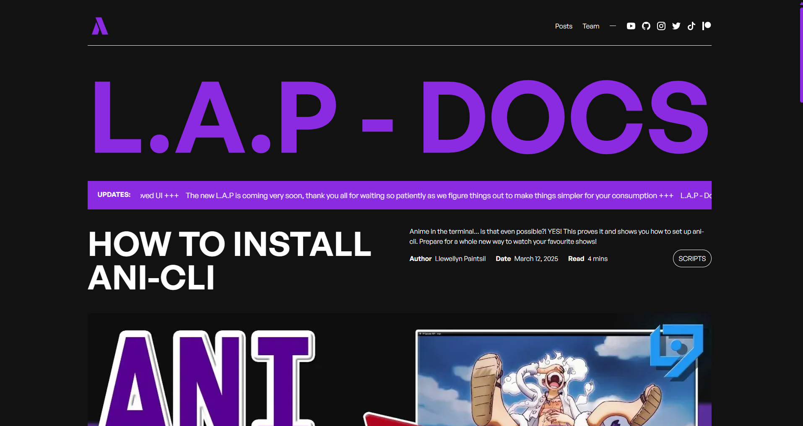

L.A.P Docs

L.A.P Docs is a blog website that provides tutorials and guides on various tech related topics. It's mostly focused on the documentation of the videos I create on my Youtube channel.
The website is built using next.js and styled with Tailwind CSS and is hosted on Netlify. It features a clean and modern design, making it easy for users to navigate and find the information they need.
-
Text-Based Content: Provides transcripts and notes for each video.
-
Responsive Design: Built with Tailwind CSS for a fully responsive layout.
-
Optimized Performance: Leverages Next.js features for server-side rendering and fast loading times.
-
Simple Navigation: Clean UI structure for effortless browsing.
-
Dynamic filtering of posts based on categories
-
Custom designed and developed 404 error page.